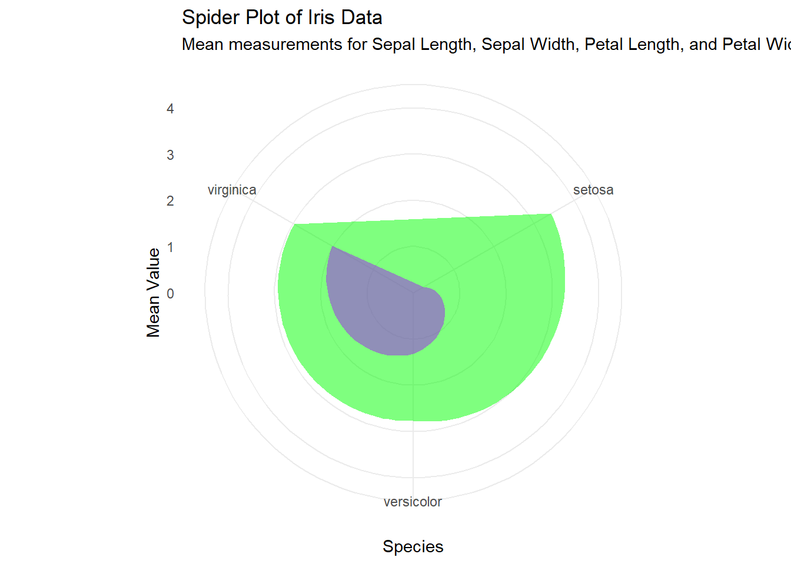
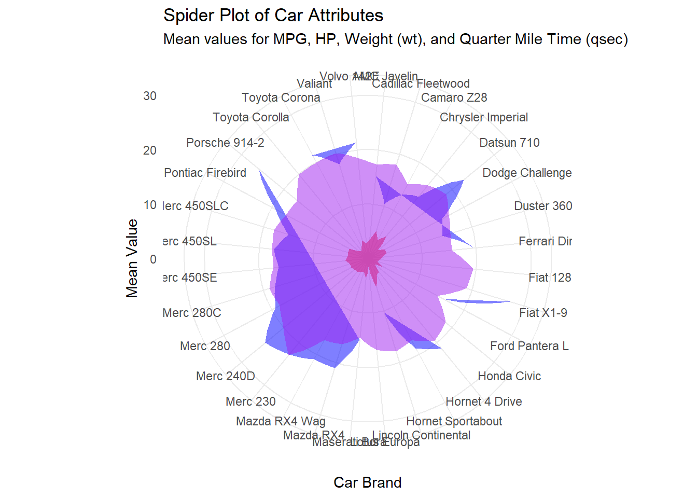
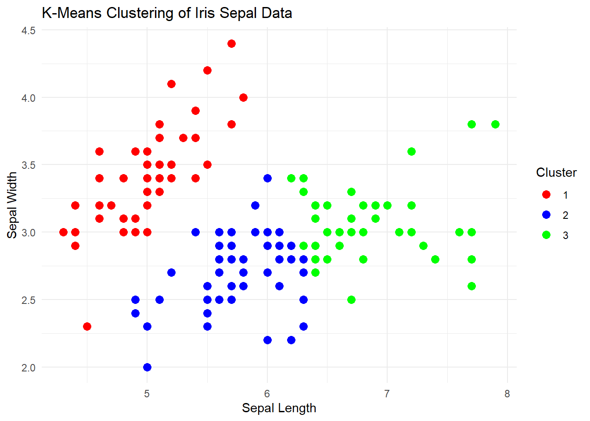

rm(list = ls(all.names = TRUE)) # limpa todos os objetos, incluindo os ocultoschat gpt
# Load necessary libraries
library(ggplot2) # For data visualization
library(dplyr) # For data manipulation
Attaching package: 'dplyr'The following objects are masked from 'package:stats':
filter, lagThe following objects are masked from 'package:base':
intersect, setdiff, setequal, union# Load the Iris dataset (a publicly available dataset in R)
data(iris)
# Prepare the data: We'll create a summary table with the mean values for each species
summary_data <- iris %>%
group_by(Species) %>%
summarise(
Sepal.Length = mean(Sepal.Length),
Sepal.Width = mean(Sepal.Width),
Petal.Length = mean(Petal.Length),
Petal.Width = mean(Petal.Width)
)
# Create a spider plot
spider_plot <- ggplot(summary_data, aes(x = factor(Species))) +
geom_polygon(aes(y = Sepal.Length, group = 1), fill = "blue", alpha = 0.5) +
geom_polygon(aes(y = Sepal.Width, group = 1), fill = "green", alpha = 0.5) +
geom_polygon(aes(y = Petal.Length, group = 1), fill = "red", alpha = 0.5) +
geom_polygon(aes(y = Petal.Width, group = 1), fill = "purple", alpha = 0.5) +
# Customize the plot
theme_minimal() +
labs(
title = "Spider Plot of Iris Data",
subtitle = "Mean measurements for Sepal Length, Sepal Width, Petal Length, and Petal Width",
x = "Species",
y = "Mean Value"
) +
coord_polar(start = 0) + # Make it a spider plot
# Adjust the axis limits
ylim(0, 4) +
# Add legend
scale_fill_manual(values = c("blue", "green", "red", "purple"),
name = "Measurement",
labels = c("Sepal Length", "Sepal Width", "Petal Length", "Petal Width"))
# Display the spider plot
print(spider_plot)
# Load necessary libraries
library(ggplot2) # For data visualization
library(dplyr) # For data manipulation
# Load the mtcars dataset (a publicly available dataset in R)
data(mtcars)
# Prepare the data: We'll create a summary table with the mean values for each car brand
summary_data <- mtcars %>%
group_by(car_brand = rownames(mtcars)) %>%
summarise(
mpg = mean(mpg),
hp = mean(hp),
wt = mean(wt),
qsec = mean(qsec)
) %>%
arrange(car_brand)
# Create a spider plot
spider_plot <- ggplot(summary_data, aes(x = factor(car_brand))) +
geom_polygon(aes(y = mpg, group = 1), fill = "blue", alpha = 0.5) +
geom_polygon(aes(y = hp, group = 1), fill = "green", alpha = 0.5) +
geom_polygon(aes(y = wt, group = 1), fill = "red", alpha = 0.5) +
geom_polygon(aes(y = qsec, group = 1), fill = "purple", alpha = 0.5) +
# Customize the plot
theme_minimal() +
labs(
title = "Spider Plot of Car Attributes",
subtitle = "Mean values for MPG, HP, Weight (wt), and Quarter Mile Time (qsec)",
x = "Car Brand",
y = "Mean Value"
) +
coord_polar(start = 0) + # Make it a spider plot
# Adjust the axis limits
ylim(0, 30) +
# Add legend
scale_fill_manual(values = c("blue", "green", "red", "purple"),
name = "Attribute",
labels = c("MPG", "HP", "Weight (wt)", "Quarter Mile Time (qsec)"))
# Display the spider plot
print(spider_plot)
# Load necessary libraries
library(ggplot2) # For data visualization
library(dplyr) # For data manipulation
# Load the Iris dataset (a publicly available dataset in R)
data(iris)
# Selecting the relevant columns for clustering
iris_data <- iris[, c("Sepal.Length", "Sepal.Width")]
# Perform k-means clustering with 3 clusters
set.seed(123) # For reproducibility
k <- 3
kmeans_result <- kmeans(iris_data, centers = k)
# Add cluster assignments to the original dataset
iris_clustered <- iris %>%
mutate(Cluster = as.factor(kmeans_result$cluster))
# Create a scatter plot with points colored by cluster
cluster_plot <- ggplot(iris_clustered, aes(x = Sepal.Length, y = Sepal.Width, color = Cluster)) +
geom_point(size = 3) +
# Customize the plot
theme_minimal() +
labs(
title = "K-Means Clustering of Iris Sepal Data",
x = "Sepal Length",
y = "Sepal Width"
) +
# Add legend
scale_color_manual(values = c("1" = "red", "2" = "blue", "3" = "green"))
# Display the clustering plot
print(cluster_plot)